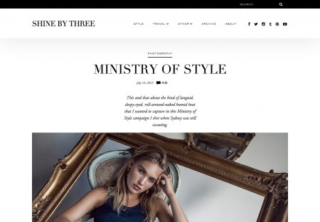
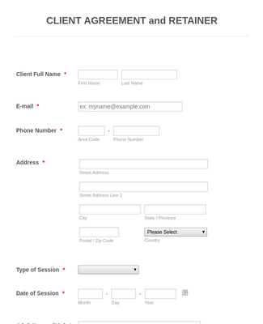

Who I Am
Developer out of Nigeria
I am a web Developer from Nigeria, Kwara state and based in Lagos currently. I enjoy building websites from small sites to fancy, colorful webpages. If you are seeking for a web devloper, get in touch with me

Full-Stack Dev
First developed by Tim Berners-Lee in 1990, HTML is short for HYPERTEXT MARKUP LANGUAGE. HTML is used to create electronic documents called PAGE that are displayed on World Wide Web(www). Every web page you see on the internet is written with HTML e.g This webpage.
Cascading StyleSheets(CSS) is a stylesheet language used for describing the prensentation of a document written in a markup language like HTML. CSS is a cornerstone technology of thw World Wide Web(www), alongsides with HTML and JavaScript. CSS specifications are maintained by the World Wide Web Consortium(W3C).
Python is an interpreted, high-level, general-purpose programming language. It supports multiple programming paradigms, including procedual, object-oriented, and functional programming. Python is often described as Batteries Included Language due to its comprehensive standard library
Developer out of Nigeria
I am a web Developer from Nigeria, Kwara state and based in Lagos currently. I enjoy building websites from small sites to fancy, colorful webpages. If you are seeking for a web devloper, get in touch with me
A selection of range
  ©2020
©2020